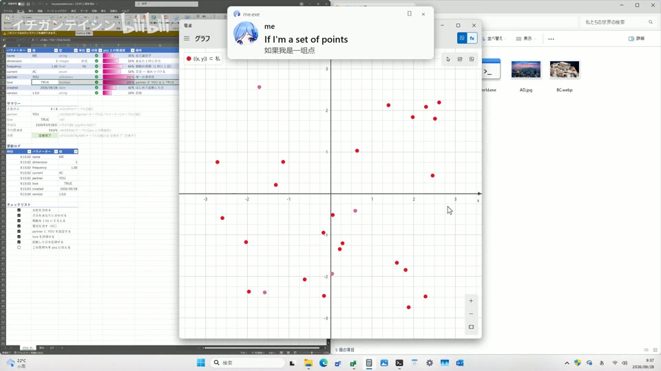

← 案例图谱AI17 / 主要视觉研究样本
使用GPT6-Astra和opus5.5生成的world.execute(me)mv
イチガンテイシン · 2663播放快照 · <10万 · B站原作 ↗
从浅桌面到暗色波形、红黑警戒、复古绿桌面，阶段边界可见；角色和通知条作为跨界面联系，真实系统细节不够严谨不影响其作为拟桌面叙事研究。

约30.000秒 · 案例代表帧从画面里找依据
这一例先看什么
从浅桌面到暗色波形、红黑警戒、复古绿桌面，阶段边界可见；角色和通知条作为跨界面联系，真实系统细节不够严谨不影响其作为拟桌面叙事研究。
审美判断
顶部通知歌词、粉色终端标题和角色表情是主要焦点；文件列表、仪表细字较密，堆窗会局部挡住角色，应按叙事窗口分配阅读顺序。
迁移到自己的题材
产品功能解释、推理线索、人物关系、搜索与等待、制度压力、人与机器的关系。
教学提问：此刻观众必须读懂哪一条信息？如果所有界面都在动，谁仍然是主角？
带画面的分析单元
图像标出取样时间，对应观察中的关键状态。单帧不能独立证明运动，连续性请结合摘录。表达作用与应用场景是教学解读，复现路线是建议，不是原作者工程还原。
分析单元 01 / 0—28秒
拟真桌面／通知气泡／窗口层叠／终端标题
实际观察
浅色桌面、右侧蓝发角色，上方消息卡，文件管理器/图表/终端层叠；20/24秒黑终端上大粉字。屏内程序和命令仅视频内容。
表达作用（教学解读）
把阅读顺序变成观看顺序；用字重、位置与停留表达强调、犹豫或压迫。
具体应用场景
观点短片、歌词视觉、人物宣言、章节、情绪高潮；先决定哪些词必须读懂，哪些只是纹理。
复现建议（非原作者工程还原）
先绘制桌面底图与图标，窗口分别作独立alpha层，按z序及矩形裁切合成，位移/缩放入场；通知标题与头像独立。
直出判断：素材和布局确定后容易，精确系统UI细节需校对
常见误用：每个字都弹跳、整句停留不足、所有文字同时争主位。严肃叙事里无理由的回弹会削弱重量。
分析单元 02 / 32—48秒
绘图软件式数学图形／切线与圆周／多图表界面
实际观察
绘图窗依次点阵、圆、曲线切线、波形；背景表格保持，48秒全界面变暗。
表达作用（教学解读）
把可控规则变成可见变化；通过不变量、比例和相位建立秩序或空间。
具体应用场景
概念解释、音乐可视化、抽象世界、图表、程序艺术。
复现建议（非原作者工程还原）
坐标映射画点线，圆周参数曲线，导数/解析切线数据生成，网格固定；全屏半透明黑层调整明暗。
直出判断：图形机制容易；数学和真实应用交互未验证
常见误用：符号无含义；空间复杂度替代概念清晰；将程序生成误等同于文生视频生成。
分析单元 03 / 52—69.5秒
文件图标选择／文件夹状态变化／弹窗隐喻
实际观察
文件夹、图片、文档和人物头像图标出现在文件窗，鼠标/选中框、通知和输入框变化。
表达作用（教学解读）
通过变化与稳定的比例让信息有轻重。视觉密度来自切镜、版式与局部动画三个层面，不只靠刀数。
具体应用场景
所有形式；尤其高潮前的蓄力、解释段的阅读、回忆段的停留和快慢对照。
复现建议（非原作者工程还原）
图标网格按状态显隐，选择框矩形，鼠标按路径移动；窗口文字用统一字体绘制。
直出判断：容易，文本内容需排版且不用操作真实用户文件
常见误用：全片等密度；把闪帧当新镜；高切速被当成质量分；没有稳定段供观众理解。
分析单元 04 / 69—73秒
终端窗口弹出收缩／录屏界面递归
实际观察
69.5终端从左下移至中央，71.1收缩、71.2隐藏；71.4淡出录屏软件样式窗口，71.5后出现多层缩小的同一窗口画面。
表达作用（教学解读）
用规则、选择与反馈组织关系，让抽象状态可被看见。
具体应用场景
人物关系、搜索、等待、推理、产品功能解释、系统压力；数值需要真实含义或明确虚构设定。
复现建议（非原作者工程还原）
层组位移和缩放；将合成结果或固定截图递归缩放嵌入显示区域，每层加小延迟可模拟反馈。
直出判断：中等，有限层递归容易直出，无需真的录屏循环
常见误用：假数据制造伪解释；辅助文字太暗；每个窗口同时运动；手机界面只是装饰外壳。
分析单元 05 / 76—128秒
图片查看器／进度条／暗色波形面板／角色表情
实际观察
相册里蔬果、猫、雕像等图；下载样式进度条，100/104秒波形仪表，116秒角色擦泪表情，128红色桌面。
表达作用（教学解读）
用规则、选择与反馈组织关系，让抽象状态可被看见。
具体应用场景
人物关系、搜索、等待、推理、产品功能解释、系统压力；数值需要真实含义或明确虚构设定。
复现建议（非原作者工程还原）
图片窗切换素材，进度条按时间线性或缓动增宽，波形按函数或音频数据绘制；角色用多状态立绘。
直出判断：界面/图表容易；立绘表情和图像素材需准备，未证波形真实响应音频
常见误用：假数据制造伪解释；辅助文字太暗；每个窗口同时运动；手机界面只是装饰外壳。
分析单元 06 / 132—168秒
错误刷屏／黄警戒带／多语言大字／转轮与裂纹
实际观察
红黑桌面堆窗，警戒带交叉；161.067起警告大字多语言替换，161.533红闪后转轮恢复并旋转，162.233红闪、162.4变蓝背景，边缘裂纹和侧栏卡继续增加。
表达作用（教学解读）
把阅读顺序变成观看顺序；用字重、位置与停留表达强调、犹豫或压迫。
具体应用场景
观点短片、歌词视觉、人物宣言、章节、情绪高潮；先决定哪些词必须读懂，哪些只是纹理。
复现建议（非原作者工程还原）
终端重复行、斜条纹贴图，独立字卡替换，轮盘PNG绕中心旋转；玻璃裂纹透明图分层叠，曝光/红色半透明层短闪。
直出判断：规则版容易到中等；轮盘/裂纹素材需准备，多个弹窗时间要编排
常见误用：每个字都弹跳、整句停留不足、所有文字同时争主位。严肃叙事里无理由的回弹会削弱重量。
分析单元 07 / 168—212.3秒
复古系统换肤／眼睛贴图／窗口压缩／关机与片尾
实际观察
168秒旧系统标志、172起复古桌面，184多个眼图，203.833记事本消失，204.5菜单、204.9对话框，205.567转黑，205.633旧系统标志；208后心形片尾。
表达作用（教学解读）
用规则、选择与反馈组织关系，让抽象状态可被看见。
具体应用场景
人物关系、搜索、等待、推理、产品功能解释、系统压力；数值需要真实含义或明确虚构设定。
复现建议（非原作者工程还原）
准备两套UI资产切换，眼睛作透明贴图按位置显隐；窗口缩放关闭，背景暗层加对话框，黑场后新底图，片尾居中标题。
直出判断：容易到中等；准确系统视觉和素材归属需核验
常见误用：假数据制造伪解释；辅助文字太暗；每个窗口同时运动；手机界面只是装饰外壳。
用连续画面核对
保留原研究的多段局部摘录。片段含音轨不代表已听审；本资料不评价音乐卡点或对白节奏。
短时变化怎样理解
69–73秒终端缩放与递归录屏属局部窗口事件，确认0次主构图替换；后段关窗到系统标志有一次主连接，不把所有菜单点击算刀。
把镜头连接、版式更新、局部图层变化和镜内运动分开记录。所查窗口是下限，不是全片平均或AI／人工排名。
原始逐窗记录 →这次练习的约束
用同一句“正在寻找一个人”做三种状态：有秩序的搜索、遇阻、失控。每版只允许一个主信息区和两层辅助信息。
先写“我希望观众明白／感到什么”，再选本页的一种手法。完成无效果基础版后再加层；解释新增层带来的收益和代价。
打开练习与复盘表 →来源、观看范围与制作归属
实际检查范围：实际查看54张4秒概览0–212秒（4表）、203.7–205.633及161–162.933两组60密集帧（4表，15/s）；69–72.9另40帧（3表，实际10/s，请求12）。212.309秒1920×1080、30fps编码。3段4秒摘录；未连续完整观看。尝试向工具提供4秒音轨时返回不支持音频输入，故仍记未听审，不编造听感或音乐卡点。
制作线索：イチガンテイシン，实页2663播放、2026-09-27；含AI生成内容。作者称使用Astra并让Opus5.5修改两次、后来高清化，亦自评UI拟真感不足。属于迭代制作自报，不证明一次生成或真实操作系统录屏。
边界：Astra生成、Opus修改及高清化为作者自述，屏内UI为成片表演，未证明真实系统操作或全自动产出。系统和第三方图像素材归属须分开。
播放快照保存时间（UTC）：2026-10-20T09:48:35.508273+00:00。H30制作方式为推定；同源改编、仿作和转载依原记录标注。
原始案例记录 · 选样表把你的判断留下来
笔记仅尝试保存在本机浏览器；浏览器策略可能限制本地文件存储，重要内容请导出。
沿着同一问题继续阅读
 H19
H19界面、程序与秩序
游戏菜单、选项和相册将动画重新组织成关系叙事。高速窗能证明短裁切执行，但较慢能量段和后记承担不同任务。
主要样本8个分析单元
 H36
H36方向、冲击与节奏
真人引子、眼脸小窗、反向重复与放射万花筒有机制参考价值；官方CG大场面不能作为新增后期证明。
机制／局限参考7个分析单元
 H35
H35漫画、纸张与记忆
临摹教材的用途是理解规则再做变体。先指出借用了什么，再检查自己更换内容后是否仍讲得清楚。
机制／局限参考9个分析单元